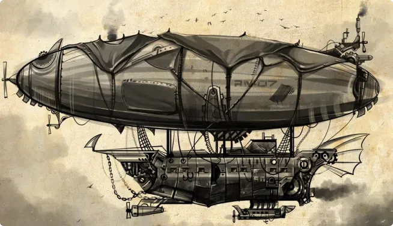
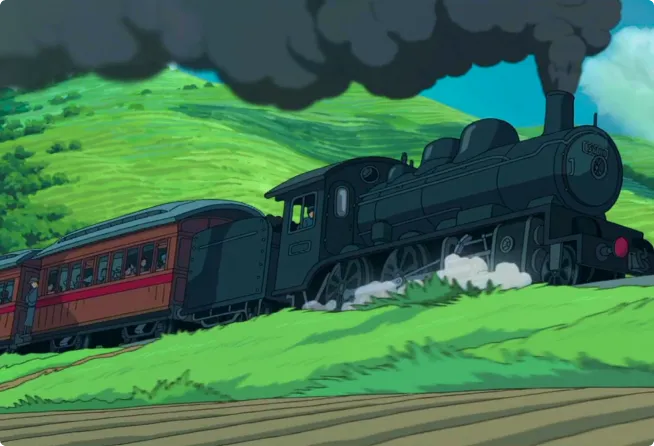
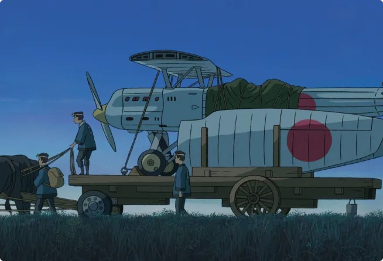

Nottingham
Vous rêvez de voyager ? Et si on visitait Nottingham et des lieux “jumeaux” de la ville ?
en lire plus
Toujours plus haut, toujours plus loin … Et si on voyageait ?
Le film choisi porte sur l’évolution de l’aviation pendant la Seconde Guerre mondiale.
Alors je suis curieuse de savoir comment ont évolué les moyens de transports et depuis quand certains existent.
Souvent présent dans des dessins animés ou dans le manga Les mémoires de Vanitas, cet engin fait rêver.
Et oui ! Il a vraiment existé !
Son premier vol à eu lieu en 1852. Ce moyen de locomotion incroyable a parcouru 27 km en ne pouvant se déplacer à plus de 10 km par heure. Inventé après la montgolfière, le dirigeable insensible aux vents se dirige plus facilement que celle-ci. L’appareil a été inventé par Henri Giffard.
Henri Giffard était un chercheur français de la navigation aérienne, passionné par les locomotives. Il est né en 1825 et mort en 1882.
Le dirigeable peut voler grâce à un moteur à vapeur qui entraîne une hélice au centre de l’appareil.
Il reste impressionnant par sa taille car on se demande forcément, comment quelque chose d’aussi gros peut voler ? Mais ça c’est une autre histoire.
L’inventeur du dirigeable étant passionné de locomotives, pourquoi ne pas en savoir plus?
La locomotive à vapeur est fonctionnelle de 1804 jusque dans les années 1950. Conçue en Angleterre par Richard Trevithick.
La locomotive a été longtemps utilisée dans certains pays où le charbon est peu cher et abondant. Également pour les trajets en montagne pour des raisons de pression atmosphérique.
Cet appareil a connu beaucoup d’évolutions, et je l’apprécie pour son charme (elle reste très bruyante et moins confortable que le train actuellement).
Les premiers prototypes qui permettent à l’homme de voler ont été inventés par Clément Ader en 1870 pendant la guerre.
Mais l’avion motorisé fiable conçu par les frères Wright a effectué son premier vol avec réussite en 1903. Cette étape marque le début de l’aviation même si elle n’a pas marqué à l’époque. Puis l’appareil a vécu beaucoup d’évolutions notamment pour des fins militaires pendant la Seconde Guerre mondiale.
Au Japon, Jirô (l’ingénieur en aéronautique) va contribuer à cette évolution en concevant les bombardiers japonais après plusieurs voyages en Europe.
On constate que depuis les années 70 il n’y a plus beaucoup d’évolution au niveau du train et de l’aviation (rares sont ceux qui pourraient voir un dirigeable aujourd’hui).
Rétrospectivement on constate que la société évolue très vite, surtout pour notre génération. Internet, les intelligences artificielles, les robots, des appareils toujours plus puissants, …
Mais depuis les années 2000 on constate moins de progrès sur les transports par rapport au siècle dernier. Hormis le passage à des véhicules moins polluants, des modèles hybrides ou électriques, ou des trains plus rapides. En 2019, au Japon a roulé le premier train pouvant atteindre les 400 km/h.
Au niveau des moyens de transport classiques comme le train ou l'avion, les progrès semblent avoir stagné au niveau du confort.
Je reste émerveillée à chaque voyage, et de voir ces appareils en fonctionnement. On n’arrête pas les progrès, je suis curieuse de voir ce qu’on pourrait inventer dans le futur pour voyager de façon insolite.
L’Homme finit toujours par atteindre ses rêves.
Vous rêvez de voyager ? Et si on visitait Nottingham et des lieux “jumeaux” de la ville ?
en lire plus

Sorti en 2013, ce film d'animation des studios Ghibli témoigne d'une histoire touchante entre un ingénieur et une jeune fille.
en lire plus